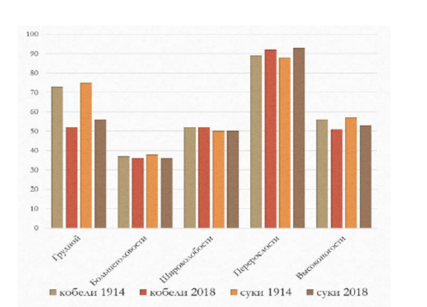

овцеводства
и
козоводства
РФ,s
посвященной
80-телию
образования
ВНИИОК:
Материалы научно-практической конференции. - Ставрополь, 2012 - С. 53–56.
4.
Сергеева Н.В., Погодаев В.А., Юлдашбаев Ю.А. Хозяйственно-полезные
качества и биологические особенности овец, полученных от скрещивания пород
калмыцкая курдючная и дорпер в условиях аридной зоны Калмыкии // Зоотехния. - 2017
- С. 22
УДК 636.751.061
ЭКСТЕРЬЕРНЫЕ РАЗЛИЧИЯ СОБАК ПОРОДЫ ПОЙНТЕР
Жиркова Анастасия Андреевна, студентка 4 курса факультета зоотехнии и
биологии, ФГБОУ ВО РГАУ-МСХА имени К.А. Тимирязева
Научный руководитель – Блохина Т.В., доцент кафедры зоологии, ФГБОУ ВО
РГАУ-МСХА имени К.А. Тимирязева
Аннотация: проведены измерения основных статей современного поголовья
пойнтеров,
рассчитаны
индексы
телосложения.
Полученные
данные
были
сопоставлены,
по
результатам
анализа
были
определены
современные
экстерьерные особенности пойнтеров.
Ключевые слова: кинология, кинометрия, стати, индексы телосложения,
охотничье собаководство, островные легавые, пойнтер.
Пойнтер является одной из старейших охотничьих пород группы островных
легавых. История этой породы начинается примерно в XVII веке в Великобритании [1],
современные стандарты которой были установлены в 1963 году Международной
кинологической
федерацией,
а
оценка
экстерьера
на
современных
охотничьих собак производится по адаптированному в 1981 году стандарту.
В настоящий момент отечественное поголовье сосредоточено в охотничьем
собаководстве.
На 102 Ленинградской выставке охотничьих собак, а также в трёх питомниках
английских пойнтеров, по общепринятым в зоотехнии методикам [2], нами были
проведены измерения основных статей собак данной породы, обоих полов в возрасте от
двух лет. Полученные данные были сопоставлены с таковыми, сделанными Д. Готтом в
начале XX века [3], для оценки изменений, произошедших в породе за более, чем сто
лет (таблица).
Анализируя
результаты
измерений
современного
российского
поголовья
пойнтеров можно заключить, что эти собаки отличаются достаточно большим ростом в
пределах от 62,3 до 59,4 см. Для исследуемого поголовья пойнтеров характерна
мезоцефальная голова, чьи размеры пропорциональны таковым туловища. Данные
собаки достаточно высоконоги. Для изученного поголовья пойнтеров характерна ярко
выраженная высокопередость – высота в холке превосходит высоту в крестце в среднем
на 8 %.
565
| Показатель |
♂ 1914 |
♂ 2018 |
♀ 1914 |
♀ 2018 |
| M±m |
CV,% |
M±m |
CV,% |
M±m |
CV,% |
M±m |
CV,% |
| Длина
головы |
23,25±0,3 |
4,75 |
22,3±0,3 |
5,7 |
21,6±0,2 |
3,9 |
21,2±0,2 |
4,45 |
| Длина
морды |
9,21±0,19 |
7,28 |
11,28±0,4 |
14 |
9,10±0,1 |
3,8 |
10,5±0,4 |
14,8 |
| Ширина
головы в
скулах |
11,92±0,2 |
4,73 |
11,69±0,3 |
10,4 |
10,86±0,2 |
5,1 |
10,67±0,2 |
6,6 |
| Длина уха |
15,64±0,2 |
4,76 |
19,33±0,6 |
11,66 |
14,32±0,3 |
6,8 |
18,78±0,2 |
4,8 |
| Высота в
холке |
62,04±0,6 |
3,23 |
62,29±0,7 |
3,98 |
56,96±0,6 |
4,0 |
59,37±0,6 |
4,1 |
| Высота в
локте |
34,54±0,4 |
4,11 |
33,04±0,4 |
4,73 |
32,32±0,5 |
5,0 |
31,22±0,4 |
5,4 |
| Высота в
локте |
55,75±0,7 |
4,46 |
56,82±1,4 |
7,75 |
49,93±0,7 |
5,1 |
55,5±0,9 |
6,7 |
| Глубина
груди |
27,00±0,5 |
6,03 |
30,42±0,9 |
10,09 |
24,39±0,2 |
8,8 |
27,68±0,4 |
6 |
| Ширина
груди |
19,86±0,5 |
8,35 |
15,97±0,54 |
10,77 |
18,39±0,5 |
7,1 |
15,46±0,6 |
14,9 |
Сравнивая современное поголовье с их предками начала прошлого века, мы
можем утверждать, что за прошедшие сто лет у кобелей и сук пойнтеров достоверно
увеличилась длина лицевого отдела головы, в то время, как уменьшилась общая длина
головы, а также достоверно увеличилась глубина груди и уменьшилась её ширина.
Поскольку
абсолютные
промеры
не
являются
полностью
объективной
характеристикой экстерьера, были рассчитаны индексы телосложения собак (рисунок 1)
[2].
566

Рис. 1 Сравнение индексов телосложения собак двух групп
Из рисунка 1 видно, что более чем за сто лет, наибольшее уменьшение
произошло в отношении грудного индекса. В то же время современные собаки более
высокопередые, о чем свидетельствует увеличение индекса перерослости. Также стоит
отметить, что у современных собак отмечены тенденции к уменьшению грудного
индекса и индекса формата.
Таким образом, для большей объективности экстерьерной оценки, имеет смысл
уделять
внимание
не
только
гармоничности
сложения
собак,
но
и
индексам
телосложения,
позволяющим
не
допустить
потери
функциональности
будущих
поколений и сохранить экстерьер ассимилированной породы.
Библиографический список
1
Блохин, Г.И. Кинология: Учебное пособие / Г.И. Блохин, М.Ю. Гладких, А.А.
Иванов, Б.Р. Овсищер, М.В. Сидорова. – М.: ООО «Издательство Скрипторий 2000»,
2001 – 432 с.
2
Охотничье собаководство. Кинология / ред. В.М. Кирьякулов. – М.:
Товарищество научных изданий КМК, 2018 – 379 с.
3
Готт, Д.Д. Обмеры и оценка экстерьера собак / Д.Д. Готт. – М., Ленинград,
1935 – 144 с.
567